-
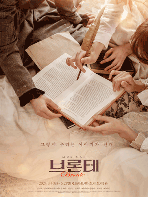"우리 글이 우리에게 자유를 선물해 줄거야."
단지 글을 쓰는 '여성'이라는 것만으로 수많은 어려움을 감내해야만 했던,
그들이 활자로 담고 싶었던 이야기는 무엇일까?
치열했던 삶 속에서 끝끝내 작가가 되고자 했던 브론테 자매.
그들은 마침내 원하던 미래를 얻게 될까? -
 사랑, 용기, 희망에 대한 대서사시
사랑, 용기, 희망에 대한 대서사시기구한 운명의 청년 장발장이 빵을 훔친 죄로 19년을 감옥에서 지낸 후, 가석방되지만 전과자에 대한 배척과 멸시에서 벗어나지 못한다.
우연한 기회에 딘뉴 주교의 고귀한 사랑을 경험하게 된 그는 새롭게 인생을 시작하게 되고, 시장으로 출세하게 된다. -
 당신의 따듯한 '이웃'이 되어 줄 이야기
당신의 따듯한 '이웃'이 되어 줄 이야기빨래처럼 흔들리다 떨어질 우리의 일상이지만 당신의 젖은 마음 빨랫줄에 널어요.
바람이 우릴 말려 줄 거예요.
당신의 아픈 마음 꾹 짜서 널어요.
- 뮤지컬 "빨래" : 서울살이 몇 핸가요? Reprise -
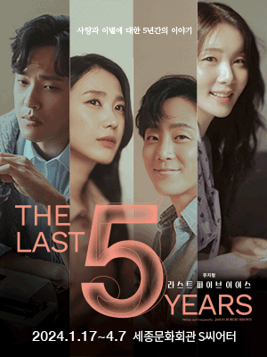사랑과 이별에 대한 5년간의 이야기
남녀의 시간이 서로 정반대로 흐르며 교차하는 독특한 구성
그래서 그들의 사랑과 이별은 더 마음 아프다
영원할 것 같은 사랑은 시작되지만, 종국엔 이별에 이르게 되는 과정을 섬세하게 그린
"사랑에 대한 담담하고 솔직한 고백" -
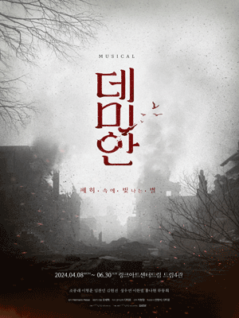최고의 명작 소설 데미안, 한 영혼의 성장기록
전쟁을 초월한듯 유유히 걸어오는 그를 보며 싱클레어는 잊었던 옛 얼굴이 떠오른다.
어둠 속의 보이지 않는 얼굴과 대화하며 자신의 과거를 천천히 여행하기 시작한다.
모든 과거를 거치고, 다시 무너진 폐허 속에서 어떤 선택을 하게 될까.
-
 진심을 전하는 이야기는 마음속에 꼭 흐르고 닿는다.
진심을 전하는 이야기는 마음속에 꼭 흐르고 닿는다.아주 먼 옛날, 2600년도 더 된 아득한 옛날의 그리스 사모스섬.
이 아름다운 섬에는 언제나 이야기가 흐르고 있다.
아주 오래전에 태어나 지금까지도 우리들 마음에 닿아 곁에 머무르며 반짝이는 이야기들에 대한 이야기
"꼭 돌아올게. 어떻게 해서든." -
 발레뤼스를 대표하는 천재들의 이야기!
발레뤼스를 대표하는 천재들의 이야기!발레 역사상 가장 혁신적이었던 발레단 '발레뤼스'
그리고 그 '발레뤼스'를 만들어 낸 디아길레프
같은 사건을 바로보는 다른 시점! 뮤지컬<니진스키>를 다른 시각으로 풀어내다.
Part2. 모던 발레를 확립한 불멸의 제작자 '디아길레프' -
 "안녕하세요, 오늘은 기분이 어떠신가요?"
"안녕하세요, 오늘은 기분이 어떠신가요?"많은 일자리들이 인공지능으로 대체된 2045년.
사람 하나 없는 무인 VR기기 공장에서 유일한 인간 노동자, 준.
접속하지 않는 자신의 유저를 기다리는 가상현실게임<오즈>의 AI 양철.
스토리모드의 끝의 도달한 둘은 원하는 소원을 이룰 수 있을까? -
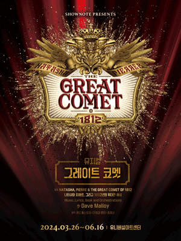관객과 한층 더 가깝게 호흡하는 이머시스 뮤지컬!
무대와 객석, 배우와 연주자 경계를 허무는 혁신적인 구성!
매혹적인 경험을 선사하는 눈을 뗄 수 없는 황홀한 무대!
다채로운 음악으로 가득채운 성스루(sung-through) 뮤지컬!
벅차오르는 감정을 느끼며, 나아간다.
새로운 삶을 향해. -
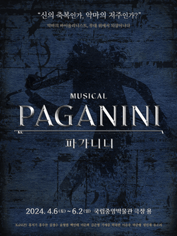신의 축복인가, 악마의 저주인가?
'락 클래식'으로 재탄생 된 파가니니 명곡!
한 순간도 놓칠 수 없는 역동적인 퍼포먼스와 폭발적인 무대!
파가니니를 둘러싼 소문의 진실
"신의 축복인가, 악마의 저주인가?"
"비르투오소 파가니니의 마지막 연주가 시작된다." -
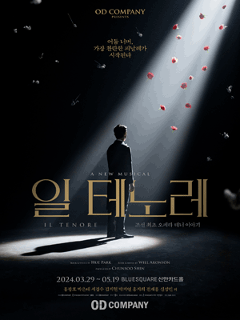나의 일 테노레. 피날레를 불러줘
일제강점기 경성. 항일운동 모임인 '문학회' 멤버들은 뜻하지 않게 이탈리아 오페라 공연을 계획한다.
침략에 맞서 싸우는 베네치아 사람들을 주인공으로 한 'I Sognatori - 꿈꾸는 자들'
이 낯선 '서양 창극'을 공연하기 위해 뭉치는 사람들.
'조선 최초 오페라'는 무사히 공연될 수 있을까? -
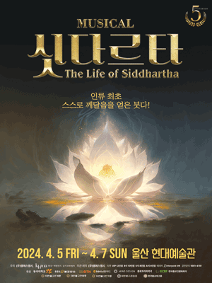태자, 죽음의 고행과 정진으로 깨달음을 찾아 나서다
어느날, 싯다르타는 한 가난한 백성과의 대화를 통해 늙고 병들어짐과 죽음을 목격하게 된다.
"왜 인간은 늙고 병들고 죽는가, 그 고통에서 어떻게 벗어나는가"
부귀한 삶을 버리고 싯다르타의 깨달음을 찾아가는 6년의 여정
싯다르타, Siddhartha(성취한 자) -
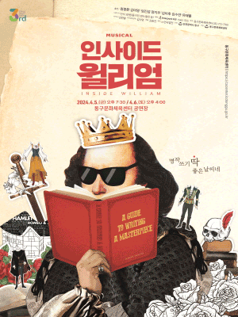통제불가 캐릭터, 엉켜버린 플롯, 달라진 장르?!
원고 밖으로 나온 캐릭터들과 이들을 통제 못하는 '셰익스피어'
셰익스피어도 상상 못했을 명작 탄생 비하인드!
"명작이 아니어도 괜찮잖아."
특별하지 않아도 소중한 '나'의 이야기 -
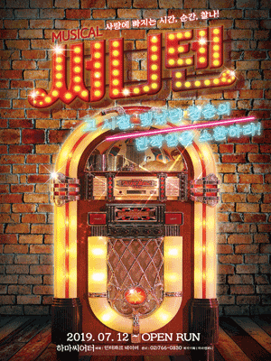그 시절, 빛났던 청춘의 반짝임을 소환하라!
혜영의 유학 허락과 함께 주어진 아빠의 조건, 소개팅!
방송을 위해 국장님이 준호에게 제안한 딜.
기한은 단 10일!
10일 안에 차여야만해!
10일 안에 사로잡아야만 해! -
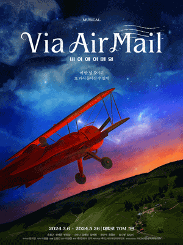이 밤, 날 찾아줘
또 다시 돌아갈 수 있게우리는 각자의 조종간을 잡고 있는거야.
당신은 연주하고, 나는 하늘을 날고. 항상 같은 순간. 디어 마이 로즈.
파비앙과 로즈는 꿈꾸던 야간 비행을 함께 할 수 있을까?!
"사랑하는 사람이 멀리서 눈 감는 순간,
그 사실을 까맣게 모르는 나는 어떤 노래를 부르고 있을까" -
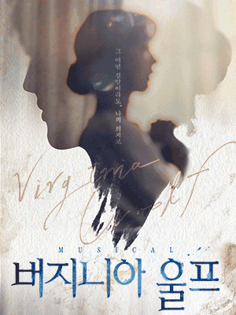허구와 실재, 그 사이에 쓰여진 이야기
펜 끝에서 시작된 또 하나의 세상.
내가 만든 세상 속에 내가 존재한다면?
20세기를 대표하는 모더니즘 작가 버지니아 울프, 그녀의 문장과 삶의 이면에서 시작된 이야기
그 어떤 결말이라도, 나의 의지로.